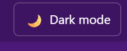
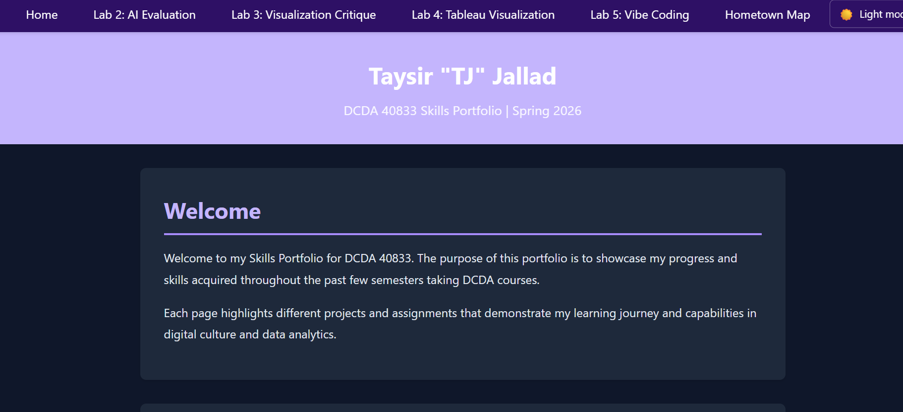
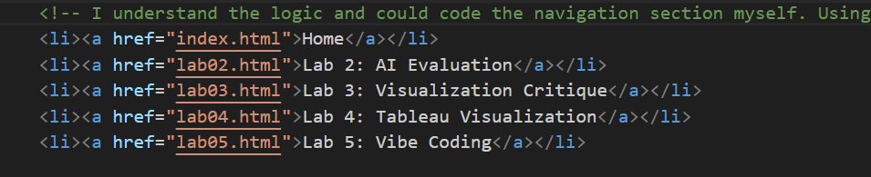

Description of What I Built/Analyzed with AI Assistance
Experiment A: Dark Mode Toggle (Portfolio Enhancement)
I used AI assistance to implement a dark mode toggle for my portfolio. The feature updates page colors for readability, remembers the viewer's theme preference with localStorage and maintains it across whichever tab in the portfolio they click on, and has clear labels on the toggle button.
Experiment C: Debugging HTML Pathway
For my debugging experiment, I was having trouble with my navigation being inconsistent, particularly on my home page. I was confused but found I had some links using the file names of "lab5.html" instead of "lab05.html". Because I felt like I had a good understand of how a navigation section of html works, I was frustrated that I could not identify the issue myself. However, using AI, I was able to quickly identify and fix the inconsistency in my navigation links which was helpful for that human error.
// Before
<a href="lab5.html">Lab 5</a>
// After
<a href="lab05.html">Lab 5: Vibe Coding</a>How I validated the fix: I tested navigation from Home, Lab 2, Lab 3, and Lab 4 to confirm each page now links correctly to Lab 5.
What I learned from this debugging experiment: filename consistency matters more than I expected in multi-page sites, and AI is most useful when I give a specific bug description and still verify the fix manually.
Comments on Key Code Snippets (Understanding Spectrum)
Below are short, condensed versions of my own comments connected to Experiments A and C.
// [I understand the logic] The HTML is syncing with the theme toggle JavaScript.
// [I understand the logic] The lines around this update the dark mode toggle text/icon to match the current theme.
// [I know what it does but not how] I follow the if/else flow, but I could not build the full JavaScript behavior from scratch yet.
// [I wrote this] I corrected the navigation filename from lab5.html to lab05.html.
// [I tested this] I clicked through Home, Lab 2, Lab 3, and Lab 4 to confirm the Lab 5 link works on every page.Brief Discussion of My Vibe Coding Guidelines
- If I submit AI-generated code, I will work with the agent to understand and modify it to my own understanding.
- I will test AI output before accepting it.
- I will document my understanding of AI-generated code.
Screenshot or Demo of Working Features



Critical Reflection (400-600 words)
Technical Understanding
The AI agent generated most of the code for Experiment A because I was starting something brand new – a new feature of having a dark mode toggle. It added code into the html, CSS, and js files. For this feature, the code was entirely generated by AI. For Experiment C however, most of the code was already existing that I wrote in. The code generation by AI in this experiment was mostly “exchanging” code that I had already written and making minor corrections. As far as the understanding spectrum went, for Experiment A, I understood most of the AI generated code at face value, and most of the logic. However, the truth is that I could not have written a good portion of it from scratch. A lot of the syntax was familiar and I remembered the terms from previous classes, but I would not be able to piece everything together myself.
Process Evaluation
The AI agent was helpful in interpreting my directions, even when they were not exactly specific. For example, I did not outright tell the agent to create my dark mode toggle feature by adding in elements to specific files within my portfolio. It simply took my description of what I wanted, found the best way to implement it, and generated code in the necessary files. I would consider my role in the process to be a supervisor. There were sometimes where the AI agent would get carried away and add things that it assumed I wanted, beyond my instructions, but the chat log history made it easy to understand exactly what changed and what I would need to revert, if necessary. As far as components that should remain uniquely human and not automated, for a portfolio like this, I believe the ideas of features should be uniquely my own. I do not see a problem with asking an agent for ideas for making my website more appealing, and selecting from there, but I believe the portfolio would lose a lot of heart if I simply gave the agent vague instructions and let it “take the wheel” in modifying my work.
Ethical and Pedagogical Considerations
As far as development is concerned, there are pieces of vibe coding that do hinder my development as a programmer, but there is also a great deal of opportunity where vibe coding supports my development. Naturally, with vibe coding, I do not retain the code as well as I would if I learned from scratch and coded from memory. However, vibe coding also allows me to experiment and learn features that I would have taken years to begin understanding if I had coded the traditional route. I also understand that vibe coding, to a certain degree, is practically the norm in most professional settings prioritizing efficiency. Moving forward, I think using best practices in vibe coding that we have reiterated throughout this class, such as going the extra mile to ensure that I understand what I am generating, will separate me from most.